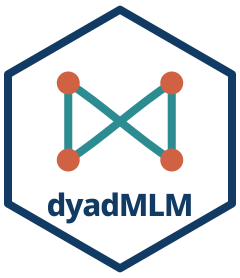

Read outcome check plots
Source:R/predictive_checks_outcomes.R
plot.dyadMLM_outcome_check.RdHow to read the pages drawn by check_dyad_outcomes() and how to follow up
flags. plot() redraws a check saved with plot = FALSE.
Usage
# S3 method for class 'dyadMLM_outcome_check'
plot(x, ask = NULL, panels = TRUE, ...)Arguments
- x
A result from
check_dyad_outcomes().- ask
Whether to pause between figures on an interactive device.
NULL(default) pauses when there is more than one figure,TRUEpauses andFALSEdraws without pausing. File devices never pause.- panels
If
TRUE(default), arrange checks in figures by composition, with one column per role or a pooled column. IfFALSE, draw each check and role separately.- ...
Unused.
Outcome check pages
The first row compares outcome distributions. Ordinal responses use bars for all defined categories, with separate 95% ranges per category, so one red point outside can occur by chance. Other outcomes show the proportion at or below each value (ECDF) for the observations and up to 30 simulated datasets. These simulated curves are not an envelope, so short stretches of the observed curve outside them can occur by chance.
The remaining rows compare the response SD (standard deviation of outcome
minus prediction), the largest absolute deviation from prediction, and, when
the composition has simulated zeros (or observed zeros, for count and Tweedie
families), the number of zeros. The SD includes random effects, so it does
not isolate the model's residual variance or dispersion parameter. For
complete cross-sectional dyads with distinct roles, these SDs match the role
SDs of check_partner_dependence() with its default
response = "model-centred".
Ordinal summaries depend on the category scores 1, 2, ..., K. Use a tall
plotting window to keep all rows readable.
Views and compositions
Start with everyone pooled (role = NULL), then also inspect meaningful
roles, such as gender, even when the model treats partners as exchangeable:
role-specific problems show only there. Use predictors of
check_dyad_residuals() to examine other measured characteristics. For
separate plots and summaries by a person-level categorical characteristic,
use that variable as role.
Each composition gets one pooled column for same-role partners, or separate
columns for distinct roles. Supplying roles does not change the model's
assumptions. Observations whose composition or role is unknown, for example
because the partner's row is missing and data was not supplied, are omitted
with a warning.
Reading flags
A flag is a red curve or point outside its blue envelope or range, or a red line outside its dashed limits. Each panel alone rarely flags a correct model, but flags add up across panels, roles, and predictor pages, so look for a consistent pattern, not any single flag. The simulation study reports how often correct and mismatched models were flagged.
With about 40 dyads, most mismatches studied were hard to detect, so the absence of flags does not show a good fit. Panels suggest possible problems, not their cause. Neither a flag nor its absence shows whether estimates or standard errors are wrong. After a flag, fit the model the pattern suggests and compare the estimates and standard errors you report. Mismatches showed mainly in these panels of both checks:
Poisson fitted to overdispersed counts: mean PIT distance, number of zeros, QQ.
Extra zeros: QQ and PIT quartiles (the number of zeros less often).
Omitted role means: QQ and PIT quartiles across predicted outcomes, by role.
Different role SDs: response SD and mean PIT distance, by role.
Spread rising with a predictor: largest absolute deviation, mean PIT distance, QQ, and PIT quartiles across that predictor.
Omitted partner effect: PIT quartiles across the partner's predictor (supply it in
predictorsofcheck_dyad_residuals()).